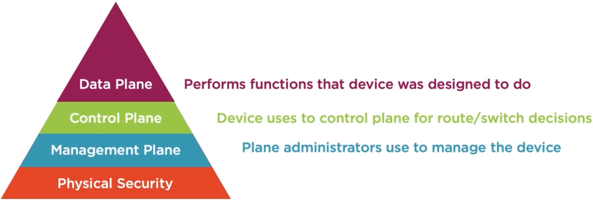

3. Securing the Management Plane¶
Secure Planes¶
Physical Security¶
One of the most important things to consider
Configurations to secure device be undone if anyone has access to device
Boot into ROMmon
Could just as easily power off device
Cut cables
Network Device Planes¶

Telnet, HTTP, SSH, and HTTPs¶
How Do You Manage a Device?¶
Console
Telnet
HTTP
Without encryption, data can be compromised
AAA¶
TACACS+ & RADIUS are used for AAA
Managing Administrators¶
Create users, passwords, and permissions on each device
Doesn’t scale
AAA
Authentication, Authorization & Accounting
AAA Process¶
Provide security guard with identification (Guard authenticates you)
Verify that the proper forms and approvals have been met (Guard authorizes you)
Logbook and camera track movements and activities (Accounting record)
RADIUS & TACACS+¶
RADIUS¶
Remote Authentication Dial-in User Service
Users would dial office modem
Radius used for authentication
UDP Ports 1812 & 1813
Password field is encrypted
Authentication Protocols:
Challenge Handshake Authentication Protocol (CHAP)
Password Authentication Protocol (PAP)
Microsoft CHAP (MS-CHAP)
Extensible Authentication Protocol (EAP)
RADIUS Messages:
Access-Accept
Access-Reject
Access-Challenge
Accounting-Request
Accounting-Response
TACACS+¶
Terminal Access Controller Access Control System
Does not include authorization in authentication request
Start message
Reply asking for username
Continue with username
Reply asking for password
Continue with password
Reply with authentication determination
TCP port 49
Entire payload is encrypted
Authorization Messages:
AAA Client starts with a new conversation for authentication
Occurs each time user tries to do anything
Send a request message
Server Responds with:
FAIL
PASS_ADD
PASS_REPL
FOLLOW
ERROR
Accounting Messages:
Request
Response
When Do You Use TACACS+?¶
Use to authorize IT employees
Have different command sets per different IT levels
Each command set would verify with AAA server that the user is authorized
Continue checking authorization for each command
When Do You Use RADIUS?¶
User access to the network
802.1X
Change of Authorization (CoA)
Cisco ISE
SNMP¶
SNMP Benefits¶
Audit trail
Immediately alerted of issues
Events are stored in MIB
Changes can be made by SNMP server
SNMPv1 & SNMPv2c¶
Community strings
all info is in plain text
At a minimum change default community
Too many orgs leave the default
Easy attack
SNMPv3 Configuration¶
noAuthnoPriv
Similar to SNMPv1 and SNMPv2c - not secure
AuthNoPriv
Username and HMAC password
AuthPriv
Username, HMAC password, & encryption - most secure
SNMP users are tied to SNMP groups
SNMP groups can be restricted to only see certain info from MIB
Additional Protocol Security¶
Securely Transferring Files¶
Secure File Transfer Protocol (SFTP)
Secure version of FTP
Uses SSH framework to provide security
Requires secure algorithms!
Secure Copy Protocol (SCP)
Also uses SSH to secure traffic
Also relies on secure algorithms
Syslog¶
Logs created for events
SIEM correlates logs and finds anomalies
Syslog messages aren’t secure
Theres now Secure Syslog
Using TLS
Network Time Protocol¶
Proper time allows logs and SNMP messages to be correlated
Some industries require precision time in orter to function
Not traditionally secured - easily attacked
DoS attacks & disrupting business activities
Use NTP authentication
DNS¶
Registrar hijacking
Attacker hacks into organizations DNS account
DNS Cache Poisoning
Attacker sends false DNS records to DNS server
Can point DNS records to malicious server to cause DoS or gain data
Cisco Discovery Protocol¶
Learn which devices are connected
IP Address, device model, VLANs, etc.
Info can be used by attacker
Reconnaissance
Disable CDP on untrusted interfaces
Management Plane ACLs¶
Controls which IPs and protocols access management plane
Permit and deny traffic based on srs/dst IPs and ports
Deny insecure protocols
Allow ssh and https from management IPs
Permit mgmt. protocols to/from management servers
Apply ACL to mgmt. plane